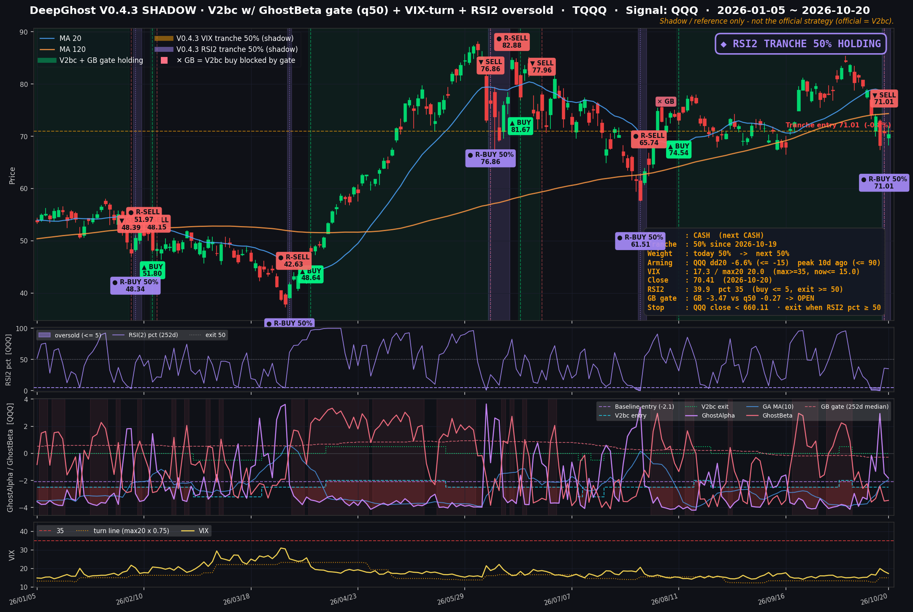

새 신호 고스트베타를 더한 V0.4.3, 26년 백테스트로 본 V0.3과의 차이
· Ghost.AI 데일리 리포트
👻 매일 시그널과 히스토리를 홈페이지에서 한눈에 → www.ghostai.co.kr
지금 운영 중인 TQQQ 전략은 V0.3입니다. 그 다음 버전 후보인 V0.4.3을 10월 20일부터 실제 매매 없이 기록만 하는 방식으로 관찰하기 시작했습니다. V0.4.3의 가장 큰 변화는 AI 모델의 새 신호 고스트베타(GhostBeta)를 매매에 더한 것입니다. 이번 특집에서는 무엇이 바뀌었는지와 2000년부터의 백테스트 결과만 간단히 정리합니다. V0.4.3은 아직 검증 중인 후보이며, 운영 전략과 실계좌는 계속 V0.3으로 움직입니다.
컨셉 — 신호 하나를 더하고, 사는 방식을 넓혔습니다
V0.3은 Ghost.AI AI 모델의 기존 매매 신호 하나로 TQQQ를 사고팔았습니다. V0.4.3은 같은 모델이 내는 새 신호 고스트베타(GhostBeta)를 함께 씁니다. 여기에 큰 하락 뒤와 단기 급락 뒤에 일부를 먼저 사는 규칙 두 가지를 더했습니다.
| V0.3 (운영 중) | V0.4.3 (관찰 중) | |
|---|---|---|
| 쓰는 신호 | 기존 AI 매매 신호 1개 | 기존 AI 매매 신호 + 고스트베타 (2개) |
| 기본 매매 | 기존 신호로 TQQQ 전량 매수·전량 매도 | 같음 (매도 규칙은 V0.3과 동일) |
| 매수 거르기 | 없음 | 기존 신호가 매수를 가리켜도 고스트베타가 약세장 속 짧은 반등으로 판단하면 사지 않습니다 |
| 급락 뒤 재매수 | 매수 신호를 기다립니다 | 큰 급락 뒤 시장의 공포가 가라앉기 시작하면 절반을 먼저 삽니다 |
| 현금 보유 중 단기 반등 | 현금으로 기다립니다 | 며칠 사이 지나치게 많이 내린 날 절반을 사고, 반등하면 며칠 안에 정리합니다 |
V0.3은 큰 하락을 피하는 데 강하지만, 피한 뒤 다시 사는 시점이 늦고 약세장의 짧은 반등에 자주 샀다가 손절했습니다. 고스트베타는 그중 "약세장 속 짧은 반등"을 걸러 내고, 나머지 두 규칙은 다시 사는 시점을 앞당깁니다.
지금 상태 — V0.4.3 기준으로는 50% 매수 구간입니다
| V0.3 (운영 중) | V0.4.3 (관찰 중) | |
|---|---|---|
| 10월 19일(월) 시가 | 보유하던 TQQQ 전량 매도 ($71.01) | 같은 시가에 기존 보유분을 매도하면서, 단기 급락 반등 규칙으로 50%를 다시 매수 ($71.01) |
| 10월 20일 종가 기준 | 현금 보유 중 | 50% 보유 중 (매수가 대비 -0.8%) |
10월 16일(금) TQQQ가 하루에 7.6% 내리면서 단기 급락 조건을 만족했습니다. V0.3은 매도 신호대로 전량 매도했고, V0.4.3은 같은 날 절반을 다시 샀습니다. V0.4.3의 50%는 단기 반등이 나오면 며칠 안에 정리하고, 더 내리면 손절합니다. 실계좌는 V0.3을 따르므로 현금 보유 중이며, V0.4.3의 50%는 실제 매매 없이 기록만 하는 상태입니다.

V0.4.3 TQQQ 차트 (2026년 1월~10월 20일). 초록 띠 = 보유 구간, 보라 띠 = 단기 급락 반등 50% 매수 구간, ✕ GB = 고스트베타가 막은 매수. 아래로 단기 과매도 지표(RSI 2일 백분위), 모델 신호(기존 AI 신호 · 고스트베타와 그 기준선), 변동성 지수(VIX). 무료 베타 기간에는 신호를 가리지 않고 공개합니다.
결과 — 수익은 높고, 낙폭은 얕았습니다
1만 달러로 시작한 백테스트입니다. TQQQ가 상장하기 전인 2010년 2월까지는 나스닥 100 하루 등락의 3배에서 보수와 차입 비용을 뺀 가상 TQQQ를 썼고, 기준일은 2026년 10월 20일입니다.
| 구간 | V0.3 | V0.4.3 | 나스닥 100 (QQQ, 1배) | |
|---|---|---|---|---|
| 2000년 3월~ (닷컴 붕괴·금융위기 포함) | 연평균 | +24.2% | +38.6% | +7.2% |
| 최대 낙폭 | -75.5% | -37.6% | -83.0% | |
| 가장 나빴던 해 | -33.2% | -11.3% | ||
| 1만 달러 → | 322만 달러 | 5,941만 달러 | ||
| 2010년 2월~ (실제 TQQQ) | 연평균 | +47.8% | +53.8% | +18.3% |
| 최대 낙폭 | -38.1% | -32.5% | -35.6% | |
| 2019년~ | 연평균 | +62.1% | +77.2% | +21.7% |
| 최대 낙폭 | -38.1% | -30.4% | -35.6% | |
| 2025년~ | 연평균 | +59.4% | +74.9% | +20.9% |
| 최대 낙폭 | -27.1% | -23.2% | -22.9% |
가장 큰 차이는 2000년대입니다. V0.3은 닷컴 붕괴 뒤 회복장에서 짧은 손절을 반복하며 최대 낙폭이 -75.5%까지 갔고, 고점을 되찾는 데 12.4년이 걸렸습니다. V0.4.3은 같은 기간 최대 낙폭이 -37.6%, 고점 회복 최장 기간이 3.8년이었습니다.
V0.4.3이 약한 곳
해마다 비교하면 26년 중 16년은 V0.4.3이 앞섰고 10년은 뒤졌습니다. 위기 뒤 시장이 꾸준히 오르는 해에 V0.4.3이 덜 벌었습니다. 고스트베타가 매수 신호를 거르는 과정에서 상승 초입을 놓치기 때문입니다. V0.3 대비 2013년 -38%p, 2009년 -27%p, 2016년 -25%p였고, 2010~2018년 연평균은 두 버전이 비슷했습니다(V0.3 +36.3%, V0.4.3 +35.2%).
꼭 함께 봐야 할 점
- 백테스트는 실제 수익이 아닙니다. 매매 비용·세금은 넣지 않았고, 2010년 이전은 가상 TQQQ입니다.
- 최근 구간 성과는 실제보다 좋게 나왔을 수 있습니다. 고스트베타를 내는 모델은 2024년까지의 데이터로 학습했습니다.
- 매매가 늘어납니다. 현금 보유 중 단기 반등 매매가 더해져 1년에 몇 차례 짧은 매매(평균 3~4일)가 생깁니다.
- 아직 후보입니다. 10월 20일부터 실시간 기록을 쌓고 있으며, 충분히 검증된 뒤에 운영 전략 교체 여부를 결정합니다. 관찰 결과는 이 블로그와 홈페이지에서 다시 알려 드리겠습니다.
Ghost.AI — Quantitative AI Investment
Model: DeepGhost v0.3 | Transformer-Based Deep Learning
Coverage: 14 tickers | Updated every trading day after US market close
⚠️ 본 자료는 정보 제공 목적으로만 작성되었으며 투자 권유가 아닙니다. 모든 투자의 책임은 투자자 본인에게 있습니다. 과거 성과가 미래 수익을 보장하지 않습니다.
[유의사항]
- 본 서비스는 불특정 다수를 대상으로 발행되는 단방향 정보 제공 서비스이며, 투자자 개인의 재산 상황·투자 목적·위험 선호도를 반영한 개별 투자 조언이 아닙니다.
- 고스트에이아이 주식회사는 고객과 쌍방향 의사소통(개별 상담, 맞춤형 자문 등)을 제공하지 않습니다.
- 본 콘텐츠는 투자 권유 또는 매매 주문의 청약·청약의 권유에 해당하지 않으며, 최종 투자 판단 및 그에 따른 손익의 책임은 전적으로 투자자 본인에게 있습니다.
고스트에이아이 주식회사